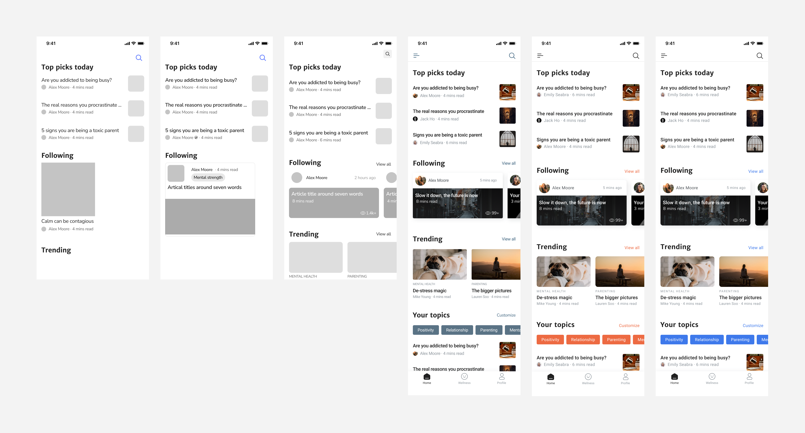
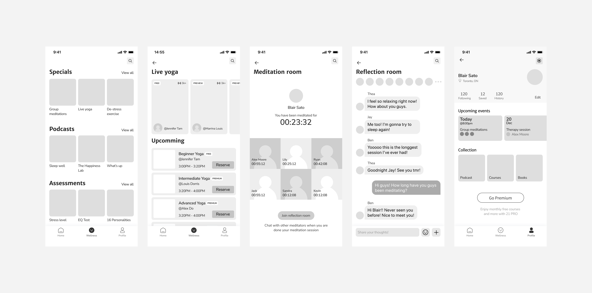

Project 21
Role
Research and design
Timeline
2 weeks in Nov, 2020
Type
Individual project
Overview
Introduction
The project idea originated from a hackathon prompt. My team and I developed a pill reminder app. Afterward, I conducted several user interviews to validate some of our initial assumptions. During this process, I discovered that my team had numerous misperceptions about mental illness and those affected by it. Based on my findings, I proposed a new solution...
Problem
How might we encourage people who struggle with mental health to reach out to mental health systems to get the help they need?
Solution
A platform attracts users with interesting psychology articles while having therapy services and additional mental health resources integrated into the app.
Features & decisions
🚀#1 Browsing article feeds
- A platform for users to proactively learn more about themselves and gain knowledge about psychology, instead of a reactive solution for "sick people".
- Provide quality articles written by verified psychologists that directly link to the author's profile.

Decision made
A platform NOT made to target people who struggle with mental health
After conducting user interviews and looking at existing solutions, I realized apps in the mental health categories are generally targeting a market that rejects them.
Related Research
3 / 6
of the interviewees have never reached out for professional help

2 / 3
who have reached out mentioned reading articles of related issues helped
Key Findings
- People don't like the association with mental health illness
- People who struggle tend to avoid cues that lead them to think they are depressed
Iterations
🚀#2 "Shop" for therapists
- Normalize the concept of talking to therapists by making the services more accessible, affordable, and transparent.
- Provide a more flexible and private option through virtual consultations.
Decision made
Display therapy resources on the author's profile, prioritizing appointment booking
The goal is to make users aware of the resources and be familiar with the mental health system through everyday use of the app, without making it seem exclusive for people who struggle. But when they are going through tough times, they will know exactly where to find help.
Related Research

Key Findings
- A lot of the free resources only care about life-threatening situations
- Cost, uncertainty, and lack of knowledge are barriers that stop people from seeking help
Iterations

🚀#3 Building Community
- Provide companionship through positive activities such as group meditation and live yoga.
- Provide additional resources that focus on wellness.

Decision made
Building community through group activities that promote general wellbeing
All my interviewees mentioned the importance of companionship, but my research had also indicated depression is contagious. Intending to build a communication-based community could backfire.
Related Research

A couple of my interviewees mentioned their therapists suggest them to do meditation and be more active. Meditation had also proven to have many health benefits includes reducing stress, releasing anxiety, etc.
Iterations
🚀#4 Onboarding
- Choose age, gender, and interests. Use a data-driven algorithm to show content and common questions based on demographics and stage of life.
Decision made
Use categories / tags to show content relevant to demographic and stage of life
When I asked the interviewees about the causes, I heard very different responses includes school, family, career, relationship, etc. Having different categories allows users to receive feeds most relevant to their situation.
Related Research
Additionally, this decision is also an attempt to address some of the fundamental causes of mental health issues, such as bad parenting. Articles under the parenting tags are aiming to teach users parenting psychology so that their kids can grow up in a healthy environment.